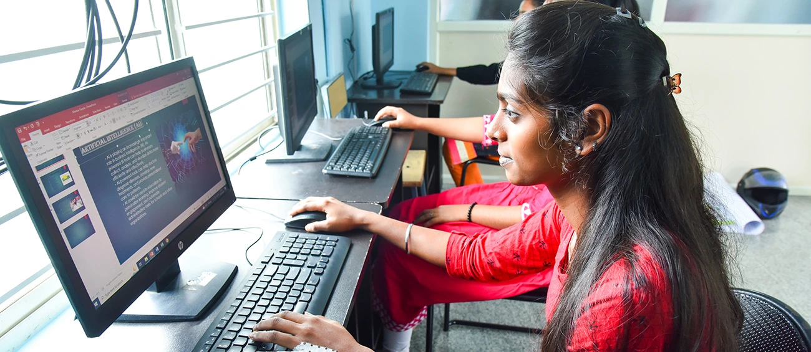

9,000+
youth trained
so far
5,500+
youth placed
so far
8
States
India’s demographic dividend window opened in 2005-06 and it is expected to last till the mid-2050s. By 2047, India will have 1.1 billion people in the working age group (15-64), which is the peak of the demographic dividend that the country is expected to reach in the coming years. And, this is why the next two decades are extremely crucial for India.
Smile Foundation through its livelihood programme connects the unemployed or underemployed youth from disadvantaged communities with sectors that have a large growth potential. The youth population under-utilised in the job market because of a lack of requisite qualifications and training is upskilled, uplifted, and mainstreamed to become a part of India’s growth story.
The skill training and livelihood programme is closely aligned with the ‘Skill India’ initiative of the Government of India. Through specialized training courses, we aim to empower individuals with relevant and in-demand skills, enabling them to adapt to the changing job market and secure meaningful employment opportunities.
Core Employability - 21st Century Skilling Enhances foundational skills essential for modern workplaces, covering communication, problem solving, teamwork, time management, personality development, digital literacy, and career readiness.
Healthcare (General Duty Assistance) Focused on entry-level roles in healthcare, equips trainees with basic medical knowledge, patient care, first aid, and hospital operations, preparing them for roles like medical assistants, caregivers, and healthcare support staff.
Banking, Finance & Insurance (BFSI) Builds financial literacy and sector-specific skills, including banking operations, insurance basics, customer service, and regulatory compliance. It prepares trainees for roles in banking, insurance sales, and customer relationship management.
Digital Marketing Introduces modern marketing strategies, including social media management, search engine optimization, content marketing, and analytics, equipping trainees for dynamic roles in digital marketing agencies, e-commerce, and brand promotion.
Spread across 8 states, the 74 Skill Training Centres impart soft skills, computer skills, English language skills, and industry specific skills to the youth trainees
Practical exposure and on-job training is a crucial part of the skilling programme and helps students become job-ready and prepared for real-life workplace challenges

Through the iTrain Project, in collaboration with Berger Paints, aimed at upskilling the painter community across India to enhance their employment opportunities
With a strong network of over 400 employment partners across industries, 61% of the trained youth secured jobs and entered the workforce
Smile Foundation’s skilling programme integrates online learning, providing participants with a flexible platform for accessing a wide range of courses and resources anytime, anywhere. Multimedia elements like videos, simulations, and interactive quizzes have been introduced in the course modules to enhance the overall learning experience of trainees and provide practical industry-relevant knowledge and skills. In addition to this, the skilling centers have transitioned to a paperless environment, streamlining processes, improving data management, and promoting sustainability.
Industry partnerships and cross learning are crucial to advance the mission of skilling. Key knowledge partnerships were formed with NIIT Foundation, Tata Strive, and Wadhwani Foundation under the STeP programme. In collaboration with NIIT Foundation, STeP offers NSDC certification to its successful trainees. Smile Foundation is accredited as a training partner under the IT-ITes Sector Skill Council. This collaboration reinforces the programme’s impact by equipping participants with industry recognized credentials, empowering them to succeed in their career journeys.
STeP works with potential employers from different sectors to understand their needs and create opportunities for students, both through campus and off-campus placements. The Placement Cell organises workshops on professional development, communication skills, interview process and career guidance. STeP has a network of over 200 placement partners including Sodexo, Portae, Quess, Business Eye Private Limited, Silarius Information Private Limited, Westside, Konnecions, Concentrix, Tata Trent, Team Lease, Team HR, My Money Mantra, etc. to support the placement of the trained youth.
Berger Paints India Ltd has partnered with Smile Foundation to implement the iTrain on Wheels programme - an upskilling initiative aimed at honing the skills of painters by training them in contemporary painting techniques and enhancing their employability opportunities, while also developing their entrepreneurial skills. The programme aims to develop a pool of skilled workforce in addition to developing entrepreneurial skills in painters. In addition to the facilitation of training, Smile Foundation also effectively monitors and evaluates the programme. During the year, 1,18,040 painters were trained through iTrain vans in 25 states.
Industry Exposure gives the students first-hand knowledge of their prospects in the job industry and aims at making them market ready. It provides the students with a direct chance to learn from the experience of others who are already a part of the industry. The learning experience is practical, and the interface helps the youth gain an insight into industry requirements. STeP trainees are taken for visits to corporate houses, retail outlets and private organisations during the training period and learn handy skills like conflict management, customer handling and workplace ethics.
The main aim of including the aspect of career counselling is to help students choose a field that is in tune with their skills and their job expectations and offer the right career guidance to the students. Career counselling has proved beneficial in terms of providing new directions to the students and boosting the confidence of the students. Students can now discuss in details about the new job trends, the variety of choices and make a more informed choice. Employees and management from various potential workplaces are engaged to give them live experience sharing sessions and a sneak peek into various career opportunities.
“I was in Class 10 when my father passed away. Our family was shattered, but my mother became our rock. She took up work as a maid, ensuring that my siblings and I could continue our education. Life wasn’t easy. I have three brothers, and my elder sister was my biggest supporter until dengue took her away two years ago. Her loss was devastating, but it pushed me to work even harder—for her, for my family, and for the dreams she believed I could achieve. I joined Smile Foundation’s livelihood training program. It wasn’t just about learning skills; it gave me confidence and hope. Soon after, I got a job as an accountant at a bank. Today, I am proud to support my family and give back to my mother, who sacrificed so much for me.”
“Caring for someone who is not able to look out for themselves is always the right thing to do. I believe an affectionate smile; a warm hug can heal a lot of pain. I have always seen my parents work hard to provide me with a better future and opportunities to succeed which has motivated me to excel in my academics and make them proud in their old age. After finishing school, I wanted to help my family and be independent. I joined college and looked for a job but couldn’t find one. Then, a friend told me about Smile Foundation’s livelihood training program. This program changed my life. It taught me so much and made me feel confident and ready for work. Now I can support my family with my job at the hospital, while I keep studying for a better future.”
“Seeing the pride in my father’s eyes and tears of joy in my mother’s eyes touched my heart like never before. This happened when I gave my mother a new saree and a kurta to my father with my first salary. My father is the only earning member in our family, and it became increasingly difficult to manage our household on his daily income. I knew in my heart how much my father struggled to provide for our family, including my education. I was determined to help him, so I started looking for employment opportunities and came across STeP that provided me with the required skill training. With their help, I was able to secure a placement at a non-profit organisation. I feel proud, independent, and determined to make a difference in more lives.”
“Jai Krishna Nayak lives a simple life with his family of four in Rourkela. He is proud of the accomplishments of his two children, both graduates now working in the service sector. But his life has not been an easy one. Jai Krishna began as a helper, steadily becoming a skilled painter and then an expert contractor. Despite the partial loss of function in his right hand due to an accident when he was 26, his determination never wavered. He continued his work, painting with his left hand and providing for his family. When he heard about iTrain skilling initiative, he seized the opportunity, eager to learn and grow. Armed with new technical skills and practicing them in his work, Jai Krishna now oversees multiple sites in Rourkela, with a team of painters under his guidance.”